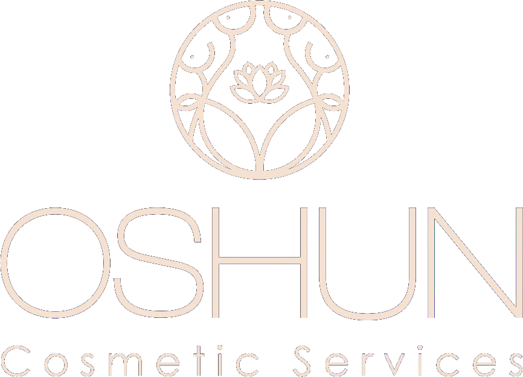

Problem 01
The OSHUN brand lacked a clearly defined identity system, leading to fragmented visual output and inconsistent brand perception. Without shared standards, execution relied on ad-hoc design decisions, limiting efficiency and clarity.
Strategy 02
I led the definition of a strategic brand foundation grounded in audience and stakeholder insights, competitive positioning, and cultural relevance. The objective was to move OSHUN from incoherent design outputs to a cohesive brand system that could support consistent decision-making and scalable growth across various platforms.
Design System 03
I designed and documented a comprehensive visual system, including color, typography, layout logic, logo usage, and content hierarchy. The system was built to be both expressive and operational: clear enough to guide daily execution, yet flexible enough to evolve with the brand.
Solution 04
The resulting identity translated abstract brand values (Precision, Confidence and Expertise) into a practical framework that aligned creative output with business intent. This shifted design from subjective styling to repeatable, strategic application.
Execution 05
I oversaw the rollout of the system across social media, promotional assets, and digital touchpoints, ensuring consistency through templates and usage guidelines. This approach reduced friction in production while maintaining a high standard of visual quality.
Outcome 06
The brand achieved stronger visual cohesion, improved engagement by 100% on social media, and a more premium market presence. Internally, the design system streamlined workflows, reduced rework, and established a sustainable foundation for future campaigns and brand extensions.
Colour
Typography
Aa
A B C D E F G H I J K L M N O P Q R S T U V W X Y Z
Aa
A B C D E F G H I J K L M N O P Q R S T U V W X Y Z
Aa
A B C D E F G H I J K L M N O P Q R S T U V W X Y Z
Logo

Motif
Service Iconography
Facial
Surgeries
#EEC8AERejuvenation
Surgeries
#E0EAF3Body Contour
Surgeries
#F6D9D4Look and Feel
Social Media